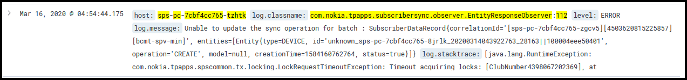
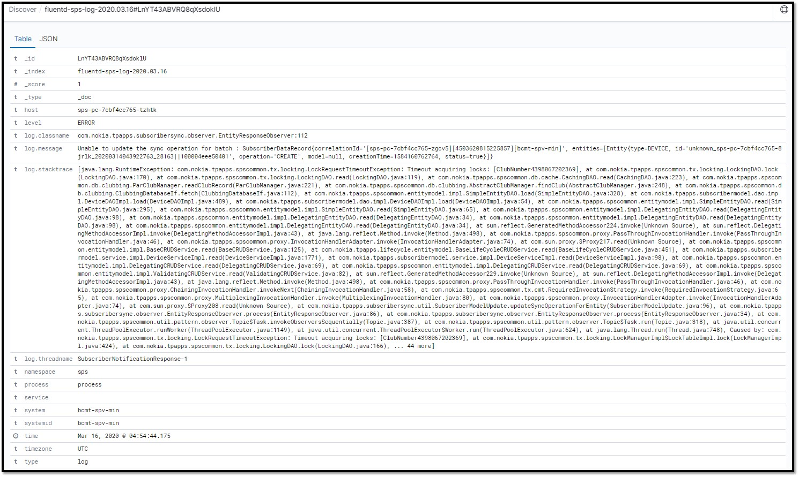
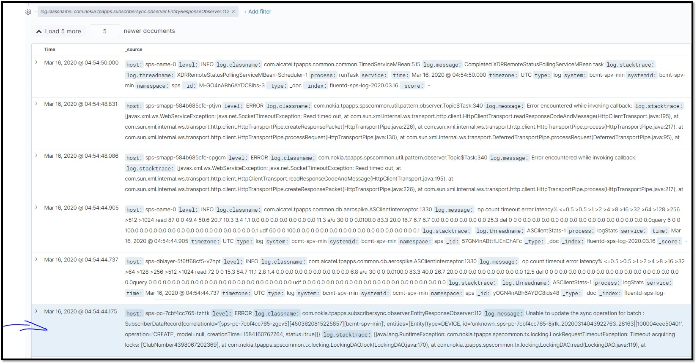
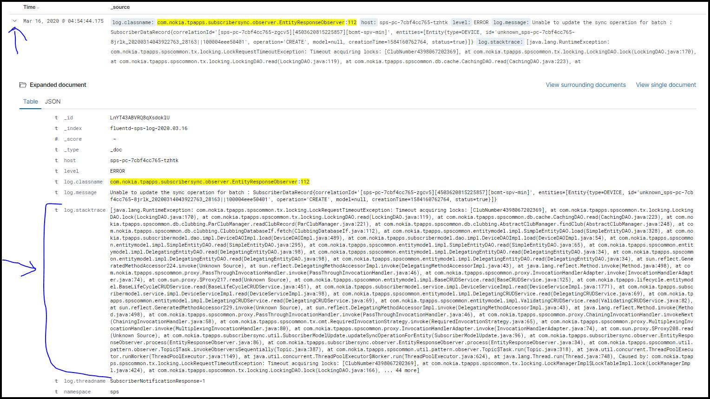

This is an example of a trace result in OpenSearch Dashboard.

To view more information, expand the trace and select View single document.
Selecting
View single document displays table and JSON formats of the entire
trace.

To view surrounding traces, select View surrounding documents.
A list of other traces is displayed. Each trace may be expanded.

This is an example of an expanded trace. Both table and JSON views are available.
